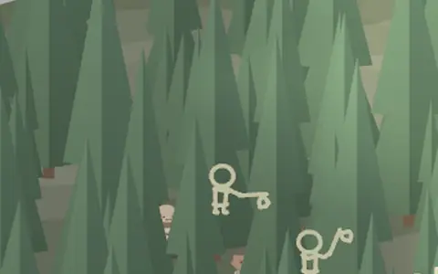
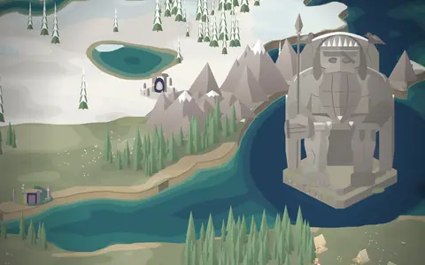
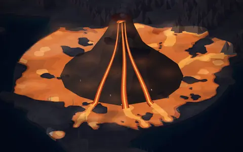
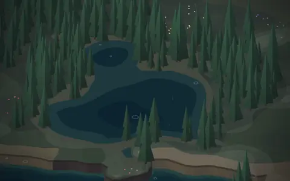
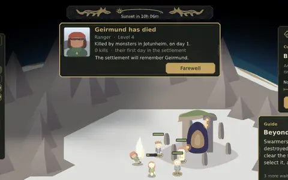
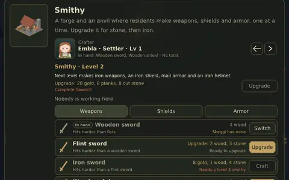
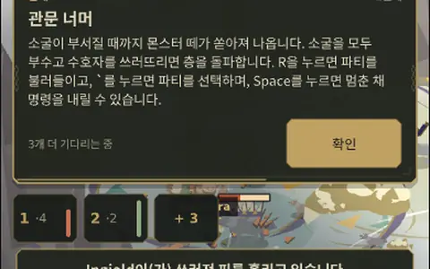
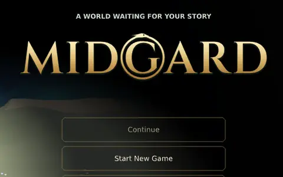

Working galleries from development; some show rejected attempts.

Units behind trees and peaksHow to show residents and monsters standing behind tall trees and peaks.14 pictures and loops
Trees, mountains and land coloursTaller trees, peaks that grow with their range, and a return to the earlier land colours.21 pictures and loops
LavaMaking lava read as hot and moving, by day, at night and beyond a gate.5 pictures and loops
Rain on the groundSmall splash rings where rain lands, and none where it should not.6 pictures and loops
Expeditions through the gatesChoosing a party, holding the moment someone falls, and the result screens.13 pictures and loops
Smithy, workbench and toolsCrafting stations with levels, weapons and armour, and tools that show in the hand.11 pictures and loops
The game in KoreanWalking every new screen in Korean and listing any English left behind.6 pictures and loops
The title screenA world-serpent wordmark, and a title scene that runs on its own.11 pictures and loops